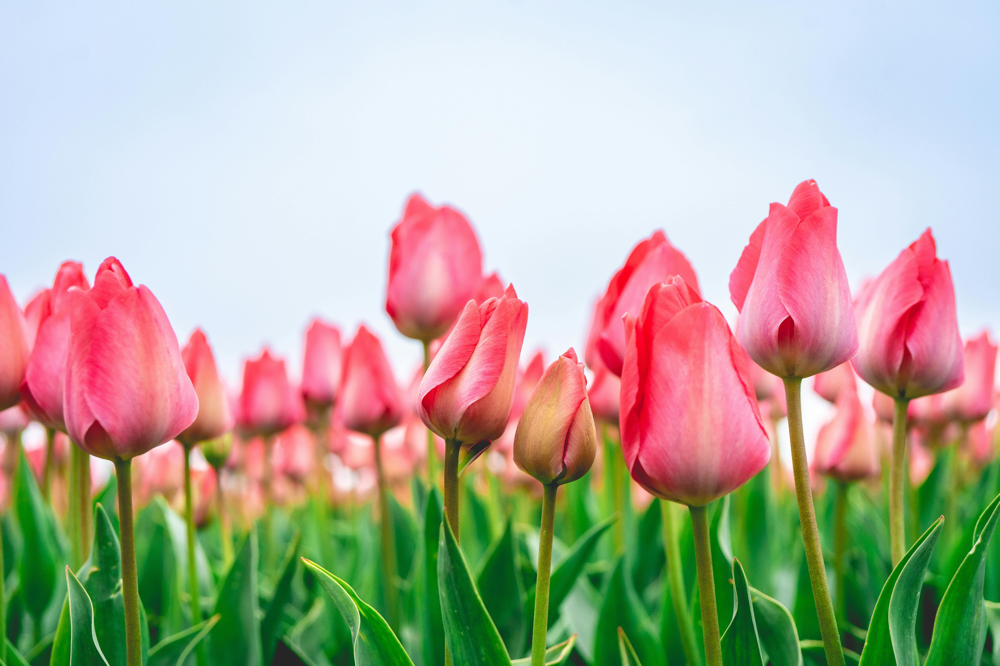
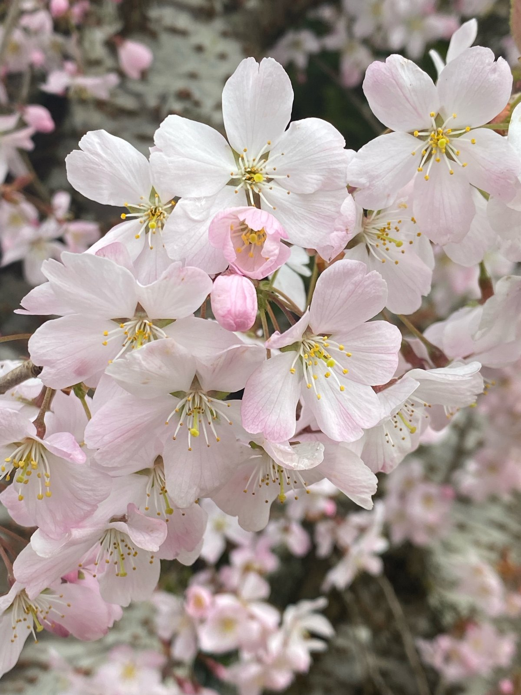
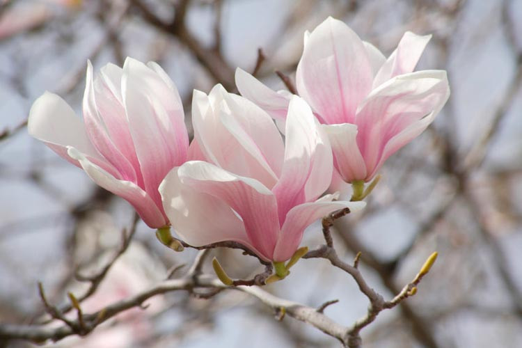

While the angiosperm lineage is considered older, definitive vessels in the fossil record appeared during the mid-Cretaceous (approximately 100-130 million years ago). This period coincided with a second drop in atmospheric CO2, which likely accelerated the radiation of these highly efficient plants.


Vessel elements: Unlike older groups, angiosperms primarily use vessels, which are multi-celled, wide-diameter tubes that can be meters long. These provide up to 100 times the hydraulic conductivity of tracheid-based plants. According to (article), a tracheid-based would have to be ten times thicker to achieve the same hydraulic conductivity efficiency as the vessels found in angiosperms.
Fibers: Angiosperms evolved specialized fibers for mechanical support. Because structural support is handled by fibers, vessels can evolve to become wider and more efficient for water transport. This allows these flowering plants to achieve rapid growth and high photosynthetic rates. However, wider vessels introduce a high risk of cavitation, the formation of air bubbles that interrupt the continuous column of water in the xylem. These air bubbles, known as embolisms, can form due to conditions like drought, freezing, or physical damage. When many vessels are blocked, water transport to the leaves can fail, which leads to wilting or hydraulic failure.
However, angiosperms, as a very diverse group, has evolved physiological mechanisms to reduce the risk of hydraulic failure under cavitation, resulting in a wide range of drought tolerance strategies, such as:
Stomatal Regulation: This is the primary active strategy used by most land plants to maintain water balance and regulate transpiration rates. By controlling the opening and closing of stomata, plants can limit water loss and prevent strong negative pressure in xylem that can pull air into the vessels and cause cavitation.
Interconduit pits: These specialized regions are in the vessel walls, connecting neighboring vessels and serves as check valves that allow water to pass while blocking air bubbles. This stops embolism spreading from one vessel to another.
Scalariform Perforation Plates: In some species, such as magnolias, vessels contain scalariform perforation plates with multiple narrow slits. These structures help manage embolisms by wicking water across the perforations, which divides large gas bubbles into smaller ones. Some angiosperms can refill embolized vessels after cavitation occurs, and scalariform plates may facilitate this process by producing smaller bubbles that dissolve more rapidly when water pressure increases, allowing vessels to regain hydraulic function.
Reference: Sperry, JS. Evolution of water transport and xylem structure. Int J Plant Sci. 2003;164(S3):S115-S127.

Resurrection plants are a rare group of plants that can survive losing up to 90-95% of their cellular water and enter a dormant state known as anhydrobiosis. This ability is mostly observed in early bryophytes, such as many mosses. But some angiosperm like Craterostigma pumilum, a special flowering plant mostly found in Africa and Madagascar, can also be drought-tolerant (resurrection). This survival strategy is typically triggered by dehydration or the hormone abscisic acid, leading to a three-stage defense mechanism. During the first stage of moderate dehydration, the plant produces compactible solutes that keep a thin hydration shell of water around vital proteins to prevent them from denaturing, a process called preferential hydration. As water continues to dissipate and the hydration shell disappears, the plant goes through the water replacement hypothesis where it produces sugars like sucrose that form hydrogen bonds with the proteins and membrane, physically replacing water molecules and hold the cells' internal structure. In the final stage of severe drying, the cytoplasm of the cells turns into a glass-like “solid”, a process called vitrification. This makes the molecules become immobilized and stops most chemical reactions to prevent further internal damage. In this paused state, the plant also produces antioxidants to neutralize toxic byproducts (reactive oxygen species caused by drought that can damage membrane and DNA). Finally, once rehydrated, the glassy cytoplasmic matrix dissolves and cellular membrane regain flexibility. Normal metabolism and photosynthesis gradually resume, allowing the plant to return to normal growth.
Reference: Hoekstra FA, Golovina EA, Buitink J. Mechanisms of plant desiccation tolerance. Trends Plant Sci. 2001;6(9):431–438.